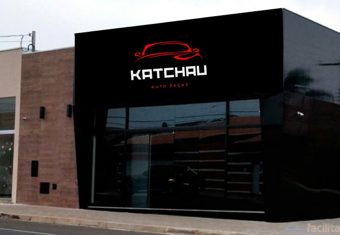
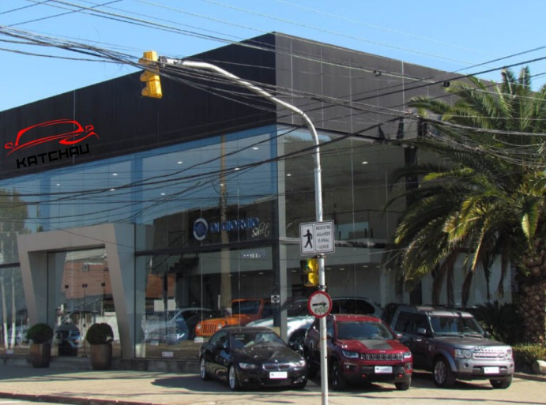
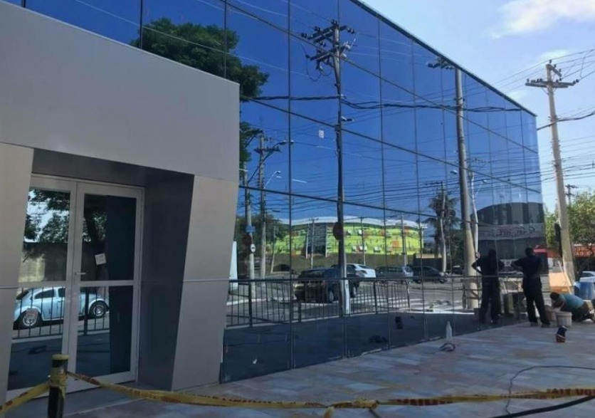

Simas era um mecânico apaixonado por carros com turbo que abriu sua própria oficina, a Oficina Simas-turbo. Além de consertar carros, este lugar era um ponto de encontro para a comunidade.
Um dia, Simas foi fazer um teste em um carro de um cliente e acabou sofrendo um acidente. Com esse acidente ele teve que vender a oficina para pagar o carro e as despesas do hospital.
Assim que se recuperou simas começou a trabalhar para um amigo e assim que juntou um dinheiro investiu na sua paixão novamente, mas em um rumo diferente em uma loja que distribui peças de carro por todo o Brasil que se chama Katchau.
No entanto Simas se tornou o dono de uma das maiores franquias distribuidora de peças do Brasil .

Loja Sede de Taubaté

Loja Sede de Teresina

Loja Sede de Goiânia